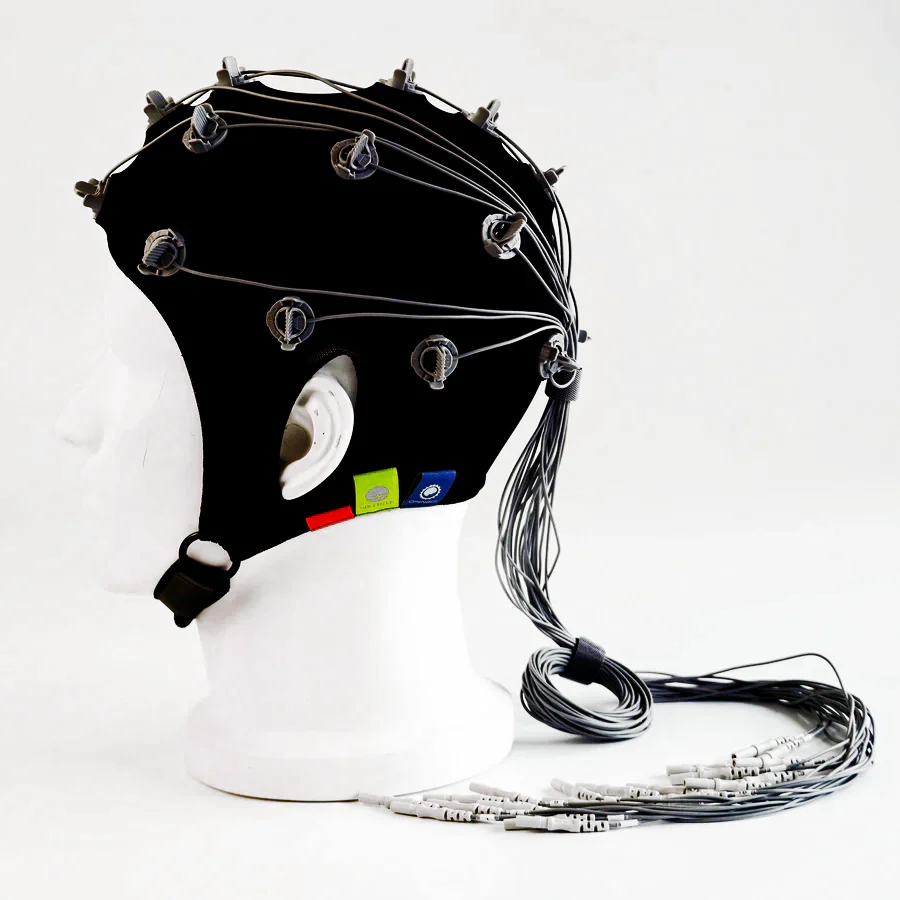
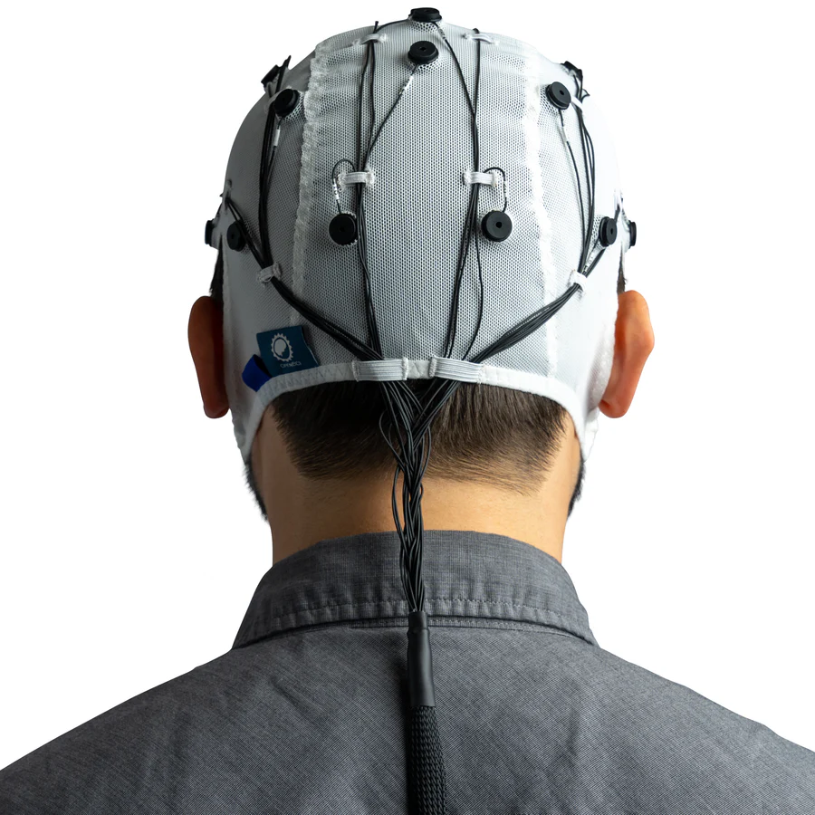
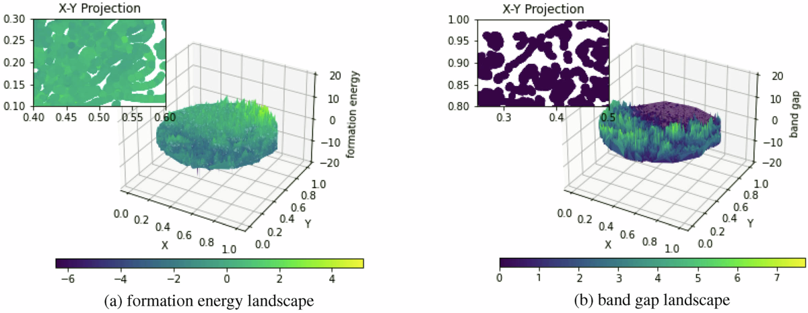

Fig 01. Neural Mapping Laboratory

Fig 02. OpenBCI Integration Testing
Bionic Vision
Developing high-density retinal arrays that bypass damaged optic nerves to send data directly to the brain.
BCI Interface
Utilizing OpenBCI’s open-source hardware to create non-invasive neural links with 99.9% signal fidelity.
AI Synthesis
On-board machine learning filters visual noise in real-time, highlighting obstacles and faces for the user.
Technical
Whitepaper
The current Phase 2 focus is on "Contextual Awareness." By integrating AI with bionic sight, the prosthetic doesn't just see—it understands the environment to predict user motion.
- ✓ 10,000 Neural Channels
- ✓ 4K Neural Resolution
- ✓ Zero-Latency Sync

Neural Fidelity Chart
[Data Visualization: Protected ML-Property]